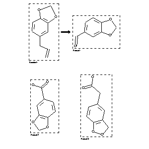

|  |
| FA | RX(1); FLST(1); RX(1) |
Reaction (1 of 1)
| Reaction ID | 5466661 |
| Reactant BRN | 136380 |
| Reactant | potassium permanganate; 5-allyl-benzo[1,3]dioxole |
| Product BRN | 131691; 150206; 177740 |
| Product | 12.13-dioxy-3.4-methylene-dioxy-1-propyl-benzene; benzo[1,3]dioxole-5-carbaldehyde; benzo[1,3]dioxole-5-carboxylic acid; homopiperonylic acid |
| No. of Reaction Details | 1 |
Reaction Details (1 of 1)
| Reaction Classification | Chemical behaviour |
| Comment | Handbook |
| Citation Pointer | 500496; Journal; Miller; ARPMAS; Arch.Pharm.(Weinheim Ger.); 240; 1902; 377;500497; Journal; Wagner; Bouschmakin; CHBEAM; Chem.Ber.; 24; 1891; 3489;500498; Journal; Tiemann; CHBEAM; Chem.Ber.; 24; 1891; 2881;1110985; Journal; Wagner; CHBEAM; Chem.Ber.; 21; 1888; 3351;500500; Journal; Poleck; CHBEAM; Chem.Ber.; 19; 1886; 1094; CHBEAM; Chem.Ber.; 22; 1889; 2862;500501; Journal; Eijkman; RTCPA3; Recl.Trav.Chim.Pays-Bas; 4; 1885; 39; |
Reference (1 of 6)
| Citation Number | 500496 |
| Document Type | Journal |
| Authors | Miller |
| CODEN | ARPMAS |
| Journal Title | Arch.Pharm.(Weinheim Ger.) |
| (Series) Volume | 240 |
| Publication Year | 1902 |
| Page | 377 |
Reference (2 of 6)
| Citation Number | 500497 |
| Document Type | Journal |
| Authors | Wagner; Bouschmakin |
| CODEN | CHBEAM |
| Journal Title | Chem.Ber. |
| (Series) Volume | 24 |
| Publication Year | 1891 |
| Page | 3489 |
Reference (3 of 6)
| Citation Number | 500498 |
| Document Type | Journal |
| Authors | Tiemann |
| CODEN | CHBEAM |
| Journal Title | Chem.Ber. |
| (Series) Volume | 24 |
| Publication Year | 1891 |
| Page | 2881 |
Reference (4 of 6)
| Citation Number | 500500 |
| Document Type | Journal |
| Authors | Poleck |
| CODEN | CHBEAM; CHBEAM |
| Journal Title | Chem.Ber.; Chem.Ber. |
| (Series) Volume | 19; 22 |
| Publication Year | 1886; 1889 |
| Page | 1094; 2862 |
Reference (5 of 6)
| Citation Number | 500501 |
| Document Type | Journal |
| Authors | Eijkman |
| CODEN | RTCPA3 |
| Journal Title | Recl.Trav.Chim.Pays-Bas |
| (Series) Volume | 4 |
| Publication Year | 1885 |
| Page | 39 |
Reference (6 of 6)
| Citation Number | 1110985 |
| Document Type | Journal |
| Authors | Wagner |
| CODEN | CHBEAM |
| Journal Title | Chem.Ber. |
| (Series) Volume | 21 |
| Publication Year | 1888 |
| Page | 3351 |